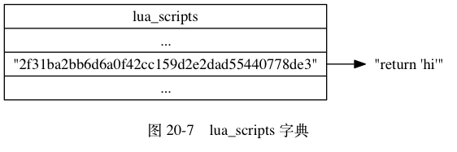

脚本管理命令的实现¶
除了 EVAL 命令和 EVALSHA 命令之外， Redis 中与 Lua 脚本有关的命令还有四个， 它们分别是 SCRIPT_FLUSH 命令， SCRIPT_EXISTS 命令， SCRIPT_LOAD 命令， 以及 SCRIPT_KILL 命令。
接下来的四个小节将分别对这四个命令的实现原理进行介绍。
SCRIPT FLUSH¶
SCRIPT_FLUSH 命令用于清除服务器中所有和 Lua 脚本有关的信息，
这个命令会释放并重建 lua_scripts 字典，
关闭现有的 Lua 环境并重新创建一个新的 Lua 环境。
以下为 SCRIPT_FLUSH 命令的实现伪代码：
def SCRIPT_FLUSH():
# 释放脚本字典
dictRelease(server.lua_scripts)
# 重建脚本字典
server.lua_scripts = dictCreate(...)
# 关闭 Lua 环境
lua_close(server.lua)
# 初始化一个新的 Lua 环境
server.lua = init_lua_env()
SCRIPT EXISTS¶
SCRIPT_EXISTS 命令根据输入的 SHA1 校验和， 检查校验和对应的脚本是否存在于服务器中。
SCRIPT_EXISTS 命令是通过检查给定的校验和是否存在于 lua_scripts 字典来实现的，
以下是该命令的实现伪代码：
def SCRIPT_EXISTS(*sha1_list):
# 结果列表
result_list = []
# 遍历输入的所有 SHA1 校验和
for sha1 in sha1_list:
# 检查校验和是否 lua_scripts 字典的键
# 如果是的话，那么表示校验和对应的脚本存在
# 否则的话，脚本就不存在
if sha1 in server.lua_scripts:
# 存在用 1 表示
result_list.append(1)
else:
# 不存在用 0 表示
result_list.append(0)
# 向客户端返回结果列表
send_list_reply(result_list)
![digraph {
label = "\n图 20-6 lua_scripts 字典";
rankdir = LR;
node [shape = record];
//
lua_scripts [label = "lua_scripts | <1> \"2f31ba2bb6d6a0f42cc159d2e2dad55440778de3\" | <2> \"a27e7e8a43702b7046d4f6a7ccf5b60cef6b9bd9\" | <3> \"4475bfb5919b5ad16424cb50f74d4724ae833e72\" "];
node [shape = plaintext];
one [label = "\"return 'hi'\""];
two [label = "\"return 1+1\""];
three [label = "\"return 2*2\""];
lua_scripts:1 -> one;
lua_scripts:2 -> two;
lua_scripts:3 -> three;
}](../../_images/graphviz-8e72c75e473e083fef2ad4262fb1f2d84731b6bc.png)
举个例子，
对于图 20-6 所示的 lua_scripts 字典来说，
我们可以进行以下测试：
redis> SCRIPT EXISTS "2f31ba2bb6d6a0f42cc159d2e2dad55440778de3"
1) (integer) 1
redis> SCRIPT EXISTS "a27e7e8a43702b7046d4f6a7ccf5b60cef6b9bd9"
1) (integer) 1
redis> SCRIPT EXISTS "4475bfb5919b5ad16424cb50f74d4724ae833e72"
1) (integer) 1
redis> SCRIPT EXISTS "NotExistsScriptSha1HereABCDEFGHIJKLMNOPQ"
1) (integer) 0
从测试结果可知， 除了最后一个校验和之外， 其他校验和对应的脚本都存在于服务器中。
注意
SCRIPT_EXISTS 命令允许一次传入多个 SHA1 校验和， 不过因为 SHA1 校验和太长， 所以示例里分开多次来进行测试。
实现 SCRIPT EXISTS 实际上并不需要 lua_scripts 字典的值
实际上，
如果 lua_scripts 字典只用于实现 SCRIPT_EXISTS 命令的话，
那么字典只需要保存 Lua 脚本的 SHA1 校验和就可以了，
并不需要保存 Lua 脚本本身。
lua_scripts 字典既保存脚本的 SHA1 校验和，
又保存脚本本身的原因是为了实现脚本复制功能，
详细的情况请看本章稍后对脚本复制功能实现原理的介绍。
SCRIPT LOAD¶
SCRIPT_LOAD 命令所做的事情和 EVAL 命令执行脚本时所做的前两步完全一样：
命令首先在 Lua 环境中为脚本创建相对应的函数，
然后再将脚本保存到 lua_scripts 字典里面。
举个例子， 如果我们执行以下命令：
redis> SCRIPT LOAD "return 'hi'"
"2f31ba2bb6d6a0f42cc159d2e2dad55440778de3"
那么服务器将在 Lua 环境中创建以下函数：
function f_2f31ba2bb6d6a0f42cc159d2e2dad55440778de3()
return 'hi'
end
并将键为 "2f31ba2bb6d6a0f42cc159d2e2dad55440778de3" ，
值为 "return 'hi'" 的键值对添加到服务器的 lua_scripts 字典里面，
如图 20-7 所示。

完成了这些步骤之后， 客户端就可以使用 EVALSHA 命令来执行前面被 SCRIPT_LOAD 命令载入的脚本了：
redis> EVALSHA "2f31ba2bb6d6a0f42cc159d2e2dad55440778de3" 0
"hi"
SCRIPT KILL¶
如果服务器设置了 lua-time-limit 配置选项，
那么在每次执行 Lua 脚本之前，
服务器都会在 Lua 环境里面设置一个超时处理钩子（hook）。
超时处理钩子在脚本运行期间，
会定期检查脚本已经运行了多长时间，
一旦钩子发现脚本的运行时间已经超过了 lua-time-limit 选项设置的时长，
钩子将定期在脚本运行的间隙中，
查看是否有 SCRIPT_KILL 命令或者 SHUTDOWN 命令到达服务器。
图 20-8 展示了带有超时处理钩子的脚本的运行过程。
![digraph {
label = "\n图 20-8 带有超时处理钩子的脚本的执行过程";
node [shape = box];
start_script [label = "开始执行脚本", width = 3.5];
finish_or_not [label = "脚本执行完毕？", shape = diamond];
finish [label = "返回执行结果"];
overtime_or_not [label = "定期调用钩子\n检查脚本\n是否已超时运行？", shape = diamond];
kill_or_shutdown_arrive_or_not [label = "有 SCRIPT KILL\n或者\nSHUTDOWN NOSAVE\n到达？", shape = diamond];
stop_script [label = "执行 SCRIPT KILL \n 或者 SHUTDOWN"];
keep_running [label = "继续执行脚本"];
//
start_script -> finish_or_not;
finish_or_not -> finish [label = "是"];
finish_or_not -> overtime_or_not [label = "否"];
overtime_or_not -> kill_or_shutdown_arrive_or_not [label = "是"];
overtime_or_not -> keep_running [label = "否"];
kill_or_shutdown_arrive_or_not -> stop_script [label = "是"];
kill_or_shutdown_arrive_or_not -> keep_running [label = "否"];
keep_running -> finish_or_not;
}](../../_images/graphviz-3b0c394f6034e4687623d85d85488802781242d3.png)
如果超时运行的脚本未执行过任何写入操作， 那么客户端可以通过 SCRIPT_KILL 命令来指示服务器停止执行这个脚本， 并向执行该脚本的客户端发送一个错误回复。 处理完 SCRIPT_KILL 命令之后， 服务器可以继续运行。
另一方面， 如果脚本已经执行过写入操作， 那么客户端只能用 SHUTDOWN nosave 命令来停止服务器， 从而防止不合法的数据被写入到数据库中。